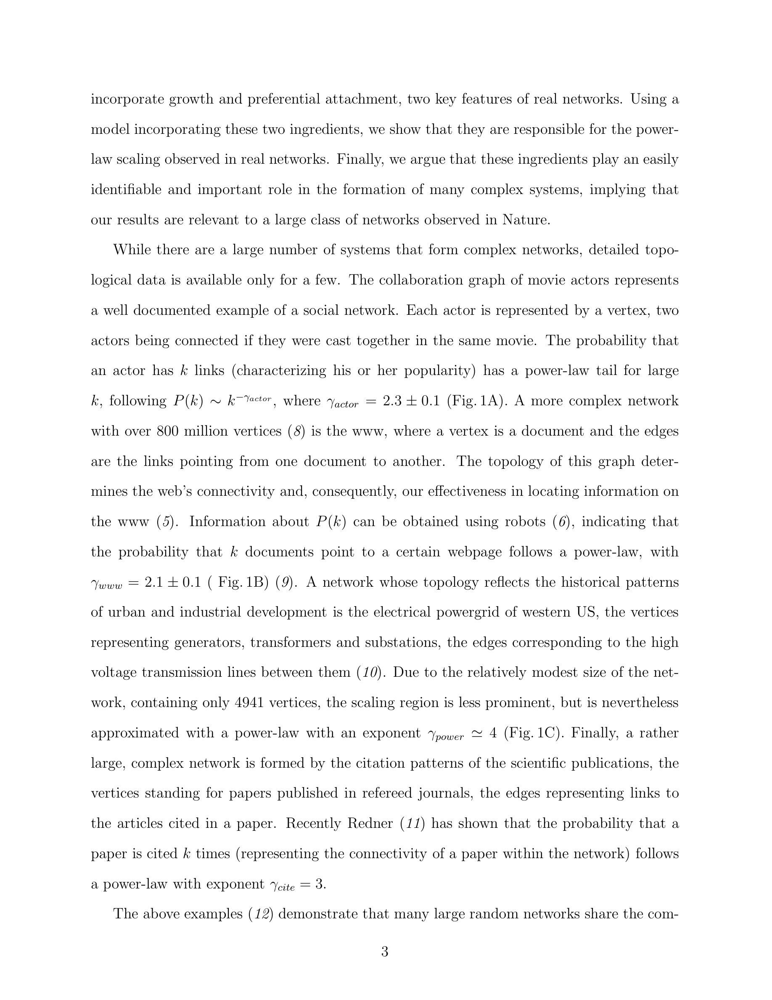

저자: Albert-László Barabási, Réka Albert | 날짜: 1999 | Journal: Science | DOI: 10.1126/science.286.5439.509 | arXiv: -

Figure 1
왜 인터넷, 영화 배우 협력 네트워크, 과학 인용 네트워크 등 다양한 실제 네트워크는 멱함수(power-law) 연결도 분포를 보이는가? 이 논문은 성장(growth)과 선호적 연결(preferential attachment)이라는 두 가지 단순 메커니즘만으로 scale-free 네트워크가 자연적으로 출현함을 보였다. 이전의 Erdos-Renyi 랜덤 그래프 모델이 설명하지 못했던 실제 네트워크의 허브(hub) 구조가 이 두 메커니즘에서 기인한다.
Figure 1
Figure 1: 영화배우 협력 네트워크, WWW, 전력망의 연결도 분포 — 멱함수 $P(k) \sim k^{-\gamma}$ 확인
이 논문은 복잡 네트워크 과학(complex network science)의 탄생을 알린 이정표 논문이다. Scale-free 구조는 인터넷의 취약점(허브 공격에 취약), 전염병 확산, 과학 지식 전파 등 수많은 현상을 설명하는 보편적 프레임워크를 제공했다.
총평: 복잡 네트워크 과학의 기초를 세운 역사적 논문으로, 성장과 선호적 연결이라는 단순 메커니즘으로 scale-free 네트워크의 보편성을 설명한 획기적인 기여이다.